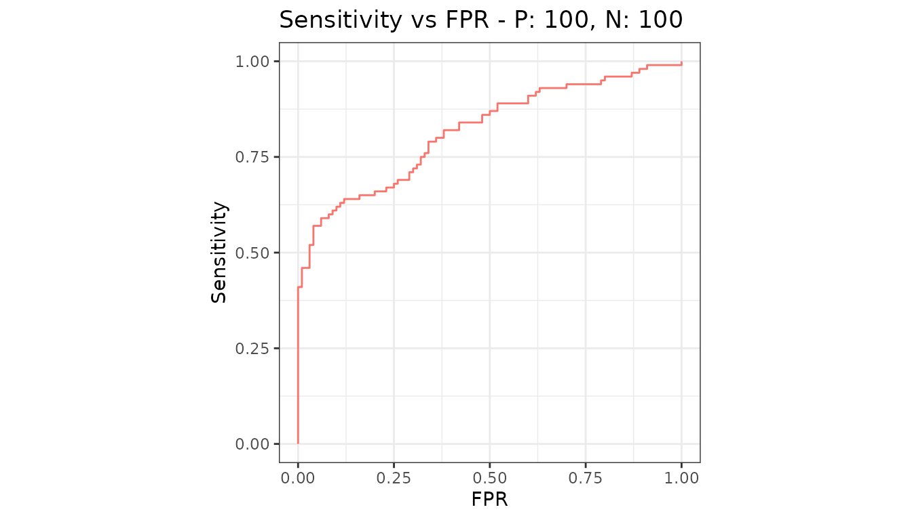
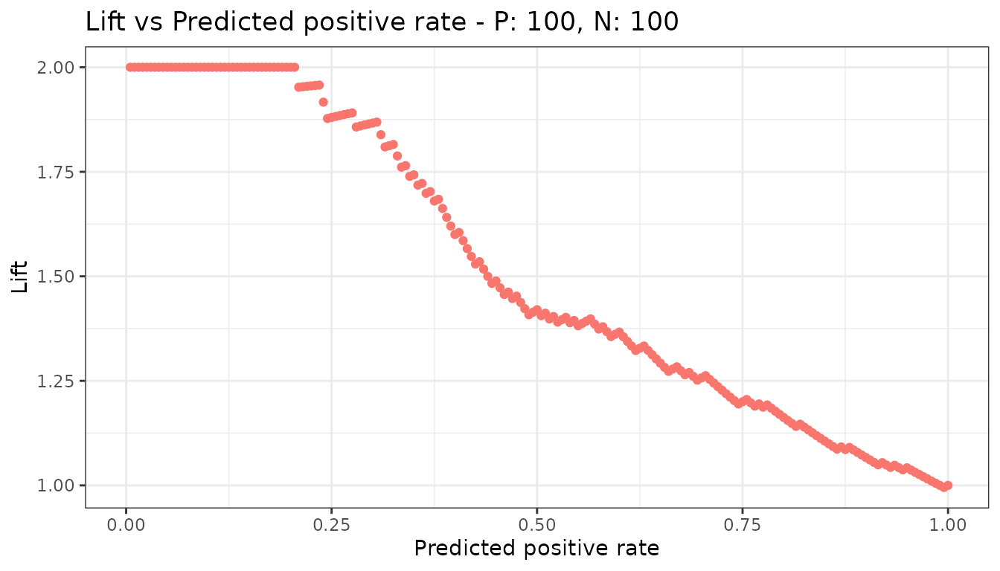
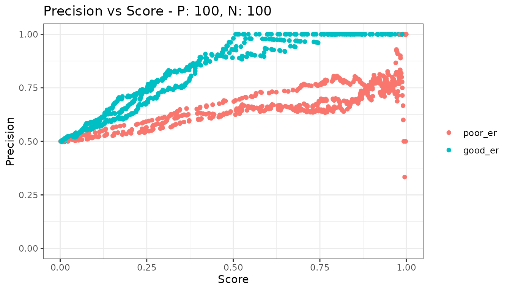

One measure against another
Source:vignettes/articles/plots-metric-curve.Rmd
plots-metric-curve.Rmdmetric_curve() takes the name of a measure for the x
axis and the name of a measure for the y axis and draws one against the
other. Every measure evalmod() can calculate is available
on both axes.
library(precrec)
library(ggplot2)
samps <- create_sim_samples(1, 100, 100, "good_er")The familiar pair
xy <- metric_curve(
scores = samps[["scores"]], labels = samps[["labels"]],
x_metric = "fpr", y_metric = "sensitivity"
)
autoplot(xy)
That pair is the ROC curve, and it is the default.
Anything else, as points
xy2 <- metric_curve(
scores = samps[["scores"]], labels = samps[["labels"]],
x_metric = "predicted_positive_rate", y_metric = "lift"
)
autoplot(xy2)
Note the points. That is deliberate, and it is the one thing worth understanding about this function.
Which pairs are joined by a line
precrec exists because the points of a precision-recall
curve must not be joined by straight lines. The measures this function
reads are raw per-cutoff values with no interpolation, so joining an
arbitrary pair of them would be the very error the package was written
to avoid.
Two pairs have a defined interpolation, and only those two are drawn as curves:
| x | y | Curve |
|---|---|---|
fpr |
sensitivity |
ROC |
sensitivity |
precision |
Precision-recall |
For those two, metric_curve() hands the work to the same
code evalmod(mode = "rocprc") uses, so the two cannot
disagree.
Everything else is drawn as points. Pass type = "l" to
join them anyway, having decided that the straight lines mean something
for the pair at hand.
Several models and test sets
metric_curve() draws one curve per test dataset and does
not average over them. An average needs a rule for interpolating between
the points of each curve, which is exactly what an unregistered pair
does not have. Use evalmod() for averaged ROC and
precision-recall curves.
samps2 <- create_sim_samples(3, 100, 100, c("poor_er", "good_er"))
mdat <- mmdata(samps2[["scores"]], samps2[["labels"]],
modnames = samps2[["modnames"]], dsids = samps2[["dsids"]]
)
xy3 <- metric_curve(mdat, x_metric = "score", y_metric = "precision")
autoplot(xy3)
Naming the measures
Both axes accept the long name, the short name, and the name other
tools use - fall for fpr, rpp for
predicted_positive_rate, and so on. The measures overview lists them all.